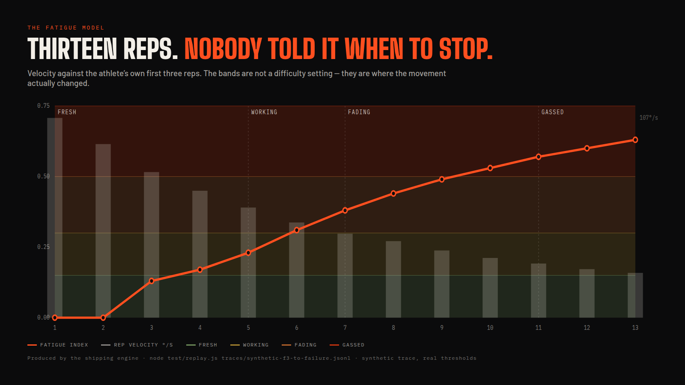

iQOO Hackathon 2026 · Pune City Battle · HealthTech
Offline AI fitness combat.
Your body is the controller. Your camera is the referee.
Nothing leaves the phone.
The field
| Kinect · Your Shape | Form-scored exercise with game feedback — in 2010 |
| Ring Fit Adventure | The best-executed thing in this space |
| Onyx · Kemtai | Phone and browser form coaching |
| Peloton Guide · Tempo | Camera and sensor hardware in the room |
Every one of them needs hardware you buy, a preset difficulty curve, or a server that receives your video.
Not a preset curve. Not a self-reported effort slider. Measured, per rep, on the device.
A language model on the NPU, not an API call. The camera feed never leaves the device.
The loop
Damage is weighted by measured form — depth, range of motion, eccentric tempo, joint alignment. A shallow rep does 50. A clean one does 85. A perfect one does 100.
Those numbers are computed, not estimated — they are asserted in the test suite.
03The novelty
Concentric velocity decay. Collapsing range of motion. Growing pauses between reps. Measured every rep, on-device, against your own first three.
The boss staggers when you fade. It finishes the fight when you're done.
One fatigue model, five movement families. Velocity for reps, tremor for holds, cadence for cardio, height for jumps, accuracy drift for poses.

The coach
After every set, a twenty-three-field summary of how your movement changed goes to a 2-billion-parameter model running on the phone. It writes the coaching. It writes the taunt. It never sees your video. Nothing does.
Output is validated before it reaches the screen: two sentences, no invented numbers, no comment on your body. If the model is slow, missing or thermally throttled, a deterministic bank speaks instead and you cannot tell.
05Architecture
Two models, one thermal envelope, never run concurrently. The release manifest has no INTERNET permission. You can check.
06Multiplayer
Events, not state. Order-independent and duplicate-safe by construction, so two players or eight is the same arithmetic. Every message carries the sender's last eight events, so a dropped packet repairs itself with no acknowledgements. Phones tap over NFC to pair.
A run becomes a ~300-character code. Send it through anything that carries text.
Ledgers reconcile when two phones meet. Eventually consistent, no backend.
Out when your measured fatigue hits GASSED. One device, any number of people.
Scope
| Rep detection, form scoring, fatigue model |
| Fatigue-adaptive boss with mercy resolution |
| On-device Gemma coach and speech |
| Two-phone duel over offline peer-to-peer |
| [MODES ACTUALLY BUILT] |
| 30-second sit-to-stand assessment |
| 5 detector families → 51 exercises |
| Yoga, cardio, isometrics, ballistics |
| Nutrition via the same multimodal model |
| Sleep, recovery, heart-rate estimation |
| Group raids, seasons, crews |
| Full Clinic Mode — five validated tests |
We're building a gamified health platform. This weekend we shipped the hardest part of it — the movement engine and the fatigue model — because everything else is data entry, and that's not where the risk is.
08Team
Android and perception.
[ONE LINE: role, strongest shipped thing]
Game systems and on-device inference.
[ONE LINE: same]
Both have deployed local LLMs on-device before. We built and threw away a prototype before submitting, so we already know where MediaPipe breaks: oblique angles, cluttered frames, and depth from a front view.
[WHY THIS PROBLEM — one honest sentence]
09Impact · optional, if the jury leans clinical
Lower-body functional strength
Static balance
Limits of stability
Published protocols, real units, and your own trend over time. Everything else in this app measures something we invented. This measures something a physiotherapist would recognise.
Not a medical device. We do not diagnose and we do not recommend treatment. We run the protocol, report the measurement with its unit, and show the trend. The only recommendation the app makes is to speak to a professional.
10